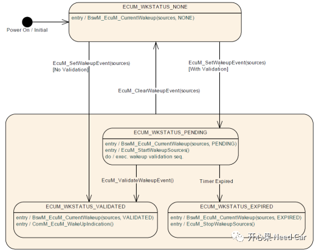

前言
在AUTOSAR中，Ecu的唤醒流程并不能简单的看作是对各个外设模块的供电动作。Autosar给了软件开发人员很大的自由度去设计目标项目Ecu的唤醒动作，而自由度越大的代价就是开发人员需要很好的设计Ecu的唤醒时序，提供Ecu唤醒过程的鲁棒性。唤醒源的状态
在EcuM中规定了唤醒源的4中状态：NONE、PENDING、VALIDATED、EXPIRED。四种状态关系的切换关系如下所示：
当Ecu上电时，唤醒源的初始状态是NONE，当唤醒源状态切换到NONE时，需要通知到BswM模块，上图也可以看出，唤醒源的每次状态切换都需要通知到BswM模块，通知接口：BswM_EcuM_CurrentWakeup。 EcuM是如何知道有唤醒事件呢？EcuM如果想知道有唤醒Ecu的事件，最好的方式就是给底层提供一个接口或者注册一个回调，Autosar里规定了标准接口：EcuM_SetWakeupEvent。当有唤醒事件发生时，底层的硬件模块（例如：Transceiver、Sensor）最先识别到，之后通过该接口上报给EcuM。 EcuM主函数会轮询检测底层上报的唤醒事件，如果想进一步的分析唤醒事件是不是有效的总线唤醒源（网络管理报文），需要Ecu有正常的收发报文能力，想要收发报文，Transceiver和Controller两个模块均需要启动。一般来讲，Transceiver会在程序初始化时进入正常的工作模式，而Controller进入正常的工作模式是EcuM调用EcuM_StartWakeupSources的结果，而该接口的内部功能的实现由开发者自行把控，autosar并未做硬性的要求。 启动Transceiver和Controller，建立了报文的正常收发能力，Ecu即可进一步的将报文上报上层模块，如：CanIf，即此时Ecu可以拿到总线的Raw Data，不管是不是网络管理报文，Ecu都可以做进一步的功能实现，如收到诊断报文唤醒网络等。 一般来说，会在EcuM模块配置两个时间参数，CheckWakeup和ValidateWakeup时间，如果CheckWakeup时间走完走完没有判断到有效的唤醒源，则调用EcuM_StopWakeupSources关闭唤醒源，这里多数关闭controller，进而Ecu失去通信能力。 ValidateWakeup时间参数配置与否决定了是否使用唤醒事件的验证功能，如果配置该参数，且验证唤醒事件有效后则通知ComM使能通信，调用ComM接口：ComM_EcuM_WakeupIndication。如果该参数没有配置，则EcuM不在绕圈，直接通知BswM唤醒事件有效，通知ComM开启通信。个人理解：该参数配置较合理。第一：可以验证唤醒事件的有效性，避免因总线抖动等干扰造成的非预期Ecu唤醒；第二：如果使用的Transceiver没有Pn功能，Ecu会因总线的扰动而不断的唤醒，假设总线有应用报文没有网络管理报文，ValidateWakeup时间给0，Ecu将会不断的走上下电流程，如果下电选择OFF流程(实际项目中很多开发人员没有开启Reset流程的Operation,即直接冷启动，这不符合autosar规范，也不安全)，将会带来未知问题（如果Ecu内核有一定时间内唤醒次数限制，超过阈值则可能上锁保护），设置该参数可以有效的延迟Ecu唤醒频率。